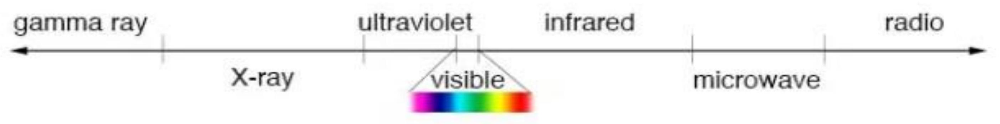
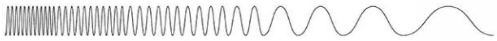

PHYSICAL BASIS OF MEDICAL IMAGING
COMPILED BY DR. E. NAILA.
IMAGING MODALITIES INCLUDE:-
- X-ray imaging.
- Ultrasound.
- Radionuclide imaging:- A radionuclide is an unstable atom that emits energy spontaneously.
- Magnetic Resonance Imaging.
DIFFERENT FORMS OF ENERGY ARE USED, NAMELY:-
- X-ray imaging employs short wavelength, highly penetrating electromagnetic radiation (X-rays)
- Ultrasound imaging employs very high frequency sound, a mechanical form of energy
- Radionuclide imaging uses gamma radiation, a form of electromagnetic radiation similar to Xrays but originating from radioactive materials
- MRI employs very strong magmatic fields and long wavelength electromagnetic radiation (radio waves)
- X rays and gamma rays are ionizing radiations, ultrasound and radio waves are non-ionizing.
THE ELECTROMAGNETIC SPECTRUM.

shorter wavelength higher frequency higher energy
longer wavelength lower frequency lower energy
1. X-RAY IMAGING
- Based on studying the pattern of X-rays transmitted through the body
- Different tissues attenuate X-rays to different extents depending on physical characteristics: density, atomic number, thickness.
- Pattern of attenuation is contained in the invisible latent image transmitted through the body
- Latent image is made visible using an image receptor (photographic emulsions or fluorescent image receptors)
CONT.
- Uniform X-ray beam incident upon subject
-
Differential attenuation of X-ray beam in different structures within subject
- Factors: atomic no.
- Density
- Thickness
- Latent image represents pattern of attenuation - It is non-uniform, invisible
- Image receptor makes latent image visible - Examples of image receptors include: Photographic film
2. ULTRASOUND IMAGING
- Ultrasound of frequencies 3-15 MHz is used
- When beamed into tissues, reflection of the ultrasound occurs at tissue boundaries, based on the physical characteristics of the boundaries
- The magnitudes of the reflected echoes and the locations of the reflecting boundaries are mapped to generate the ultrasound image
- In clinical ultrasound, body fluids are non-reflectors and will therefore appear dark; gas is a reflector ( 99% reflection) and thus one cannot examine structures lying on the other side of gas.
ULTRASOUND
3. RADIONUCLIDE IMAGING
- A radioactive nuclide which emits gamma radiation is used to tag (or label) a pharmaceutical agent selectively concentrates in a particular organ tissue
- The combination of radionuclide and pharmaceutical agent is known as a radiopharmaceutical
- When a radiopharmaceutical is administered internally to the patient, the highly penetrating gamma rays emitted by the radionuclide leave the concentrating organ and can be externally detected.
- Radiopharmaceutical is introduced into the subject [radionuclide + pharmaceutical = radiopharmaceutical]
- Emits gamma rays from uptaking organ
- Gamma rays detected by camera
CONT.
4. MAGNETIC RESONANCE IMAGING (MRI)
- Magnetism latent in the nuclei of certain atoms is stimulated by exposure to strong magnetic fields and radiofrequency (RF) pulses
- During de-excitation, the stimulated nuclei emit RF signals
- The concentration of nuclei (strength of emitted RF signal) and rates at which the de-excitation takes place (relaxation times) determines the image formed.
- The most important MRI-friendly nucleus is Hydrogen-1 (H1) in body water
- The magnetic resonance image provides high contrast information based on the H1 concentration and magnetic properties of the tissues interrogated in the environments in which they exist
UNIQUE CHARACTERICTICS OF THEI IMAGING MODALITIES
The different imaging modalities are associated with unique features in respect of:-
- The nature of information it provides (e.g. physical, chemical, physiologic, paramagnetic)
- Sensitivity (e.g. early detection)
- Ability to depict detail (e.g. resolution, contrast)
- Ability to depict dynamic change (e.g. uptake and excretion rate)
- Safety of forms of energy used (ionizing vs. non-ionizing radiation)